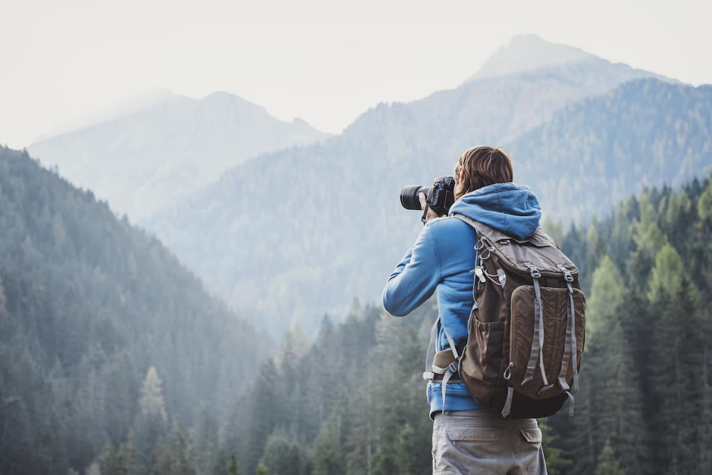
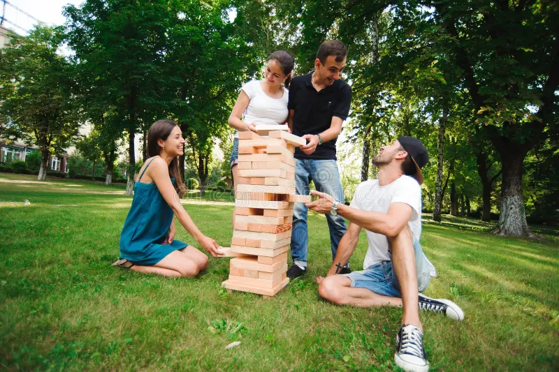

My Hobbies
- Sports: I’m a huge fan of staying active, whether it’s playing football or hitting the gym. Sports keep me energized and provide a great way to unwind and connect with others. Even though I'm open to all sports, football is more than just a sport to me—it's a passion that brings excitement and a sense of community. Whether I’m playing a casual game with friends or watching a big match, I love the strategy, teamwork, and energy the game brings. It’s a great way to stay active, challenge myself, and bond with others who share the same enthusiasm.
- Traveling: One of my greatest joys is traveling to new places with the people I care about. Whether it’s a spontaneous road trip or a carefully planned vacation, there’s something magical about exploring new destinations together. I love sharing unique experiences, discovering hidden gems, and making memories with friends and family. From lounging on a beach to hiking through mountains, each trip brings us closer and fills our lives with unforgettable moments.
- Outdoor Activities: There’s nothing quite like spending time outdoors with loved ones. Whether it's hiking up a mountain, or just enjoying a picnic in the park, outdoor activities are the perfect way for me to connect with friends and family. I cherish the moments of laughter and shared experiences that come with every adventure. It’s not just about the activity itself; it's about creating lasting memories with the people who make those moments even more special.
 